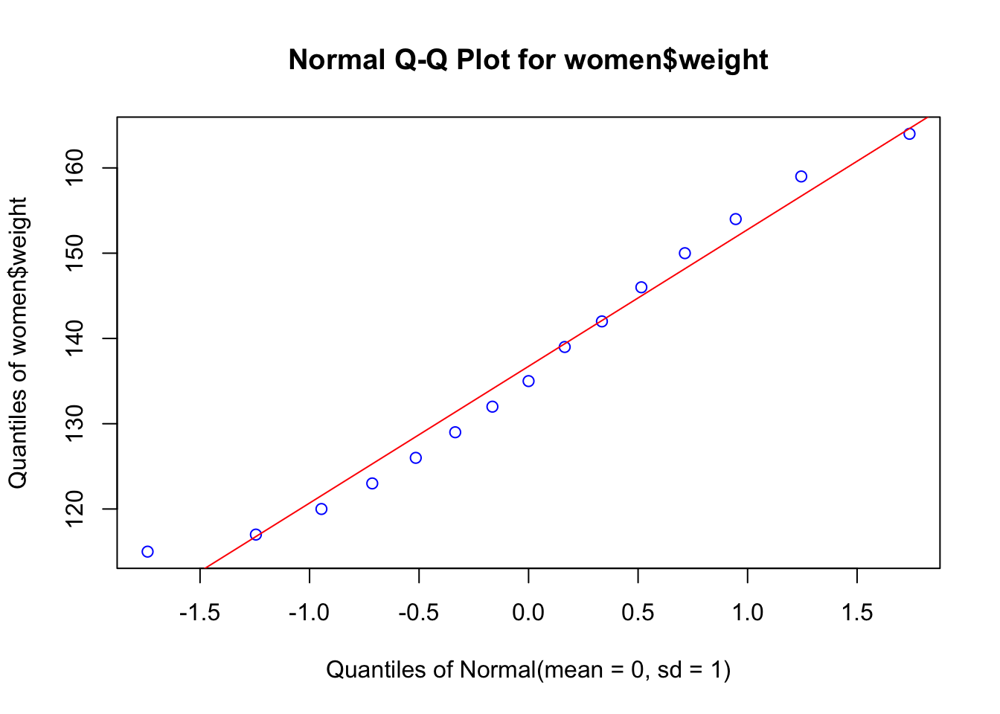
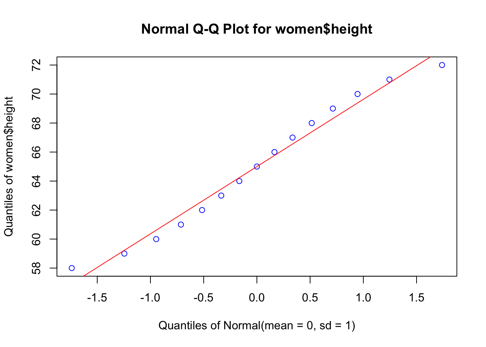
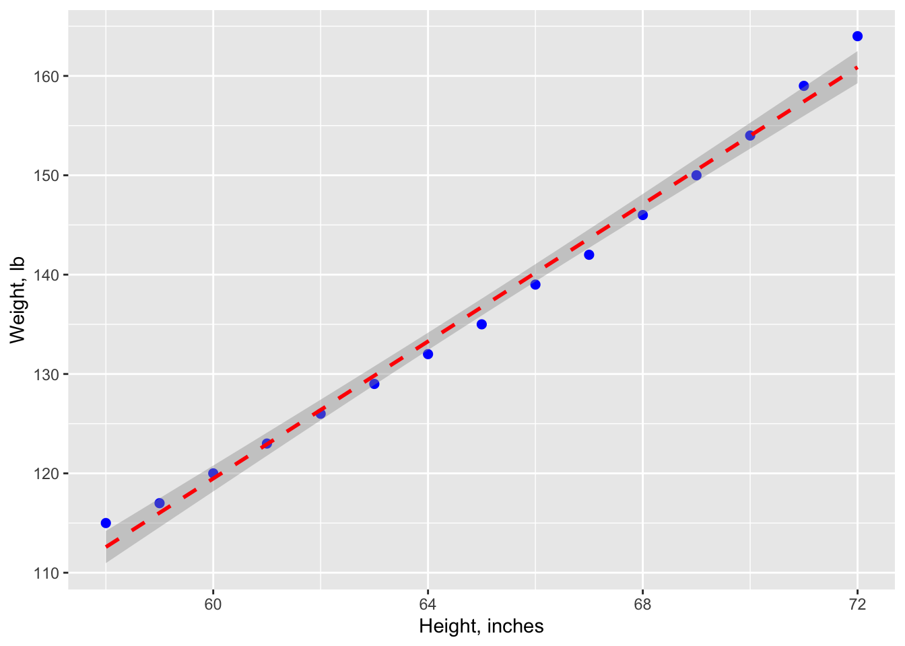
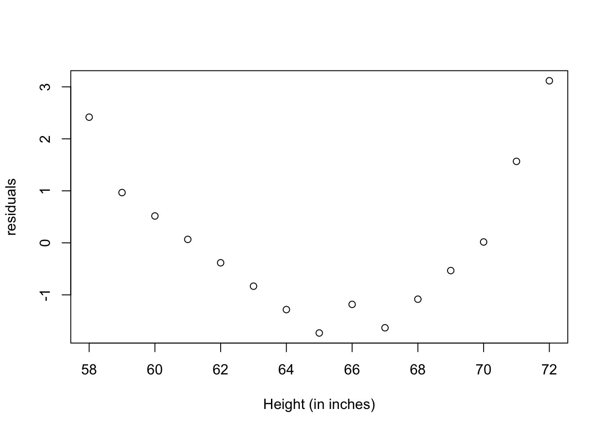
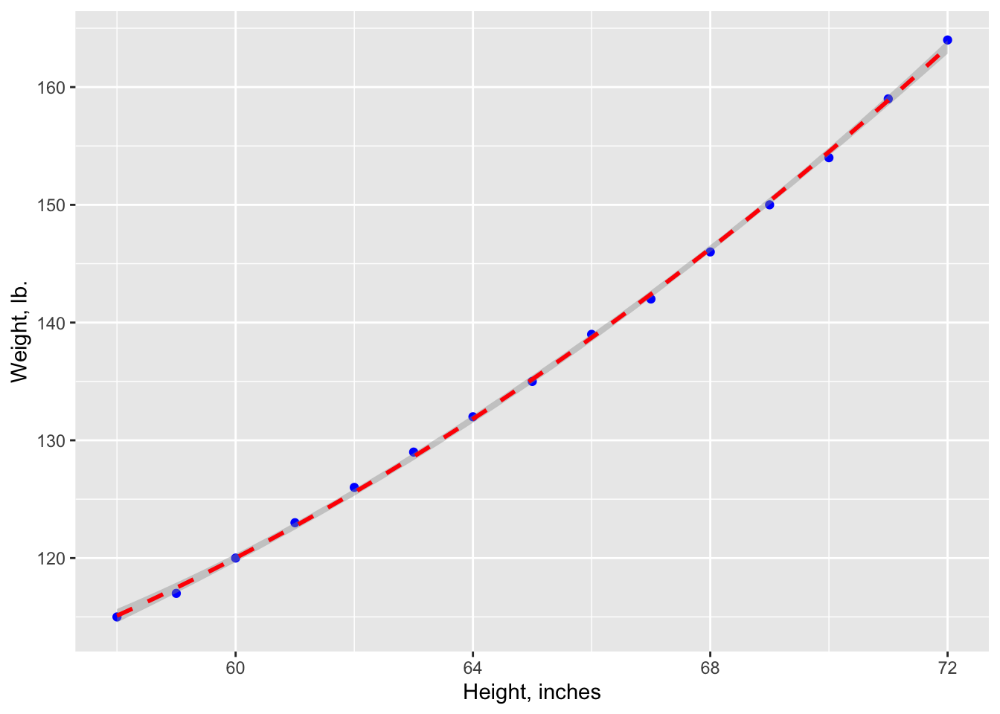
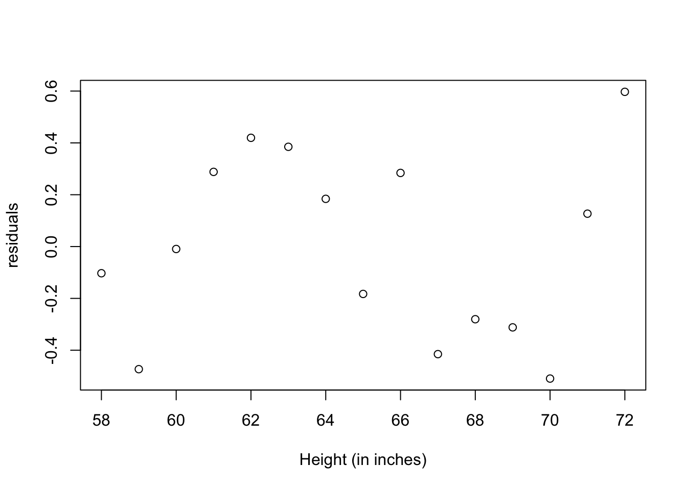
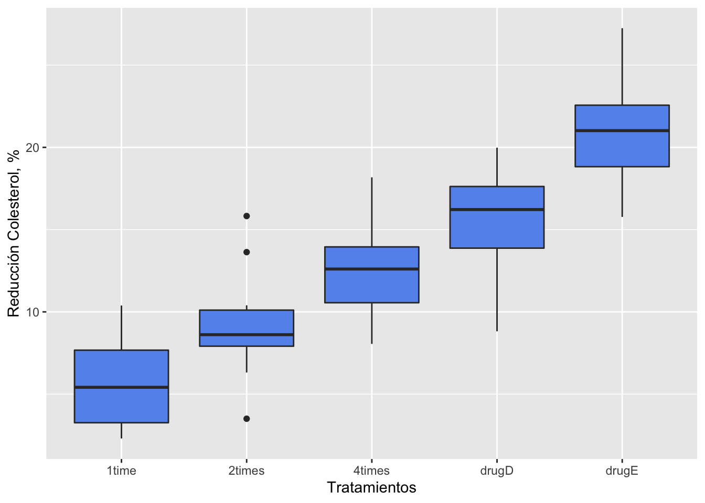
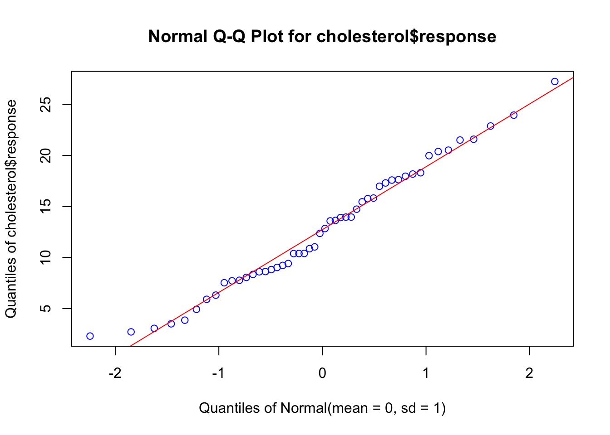
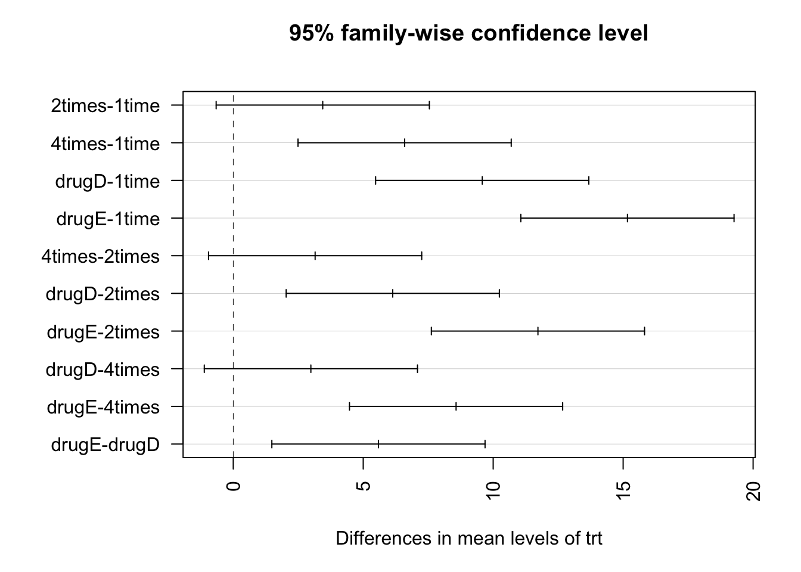

Taller RFE 20191102
D. S. Fernandez del Viso
10/30/2019
Statistical tests and graphs for the relationship between two variables
In this section we will consider the testing of statistical hypothesis for the relationship of two or more variables, and the graphs that will help in the interpretation of the results.
Regression analysis
Regression analysis is a broad term for a set of methodologies used to predict a response variable (also called a dependent, criterion, or outcome variable) from one or more predictor variables (also called independent or explanatory variables). In general, regression analysis can be used to identify the explanatory variables that are related to a response variable, to describe the form of the relationships involved, and to provide an equation for predicting the response variable from the explanatory variables.
Simple linear regression
When the regression model contains one dependent variable and one independent variable, the approach is called simple linear regression.
The data set women in the base installation provides the height and weight for a set of 15 women ages 30 to 39. Suppose you want to predict weight from height. Having an equation for predicting weight from height can help you to identify overweight or underweight individuals.
But first, we have to prove that our data are close to a normal distribution, an assumption of the parametric methods, like linear regression. First we will build a Q-Q plot that will show how good is the agreement between the quantiles of the data (using z transformation) and the theoretical quantile of the corresponding normal distribution (\(\mu = 0, \sigma = 1\))
library(EnvStats)
#Q-Q plot
women## height weight
## 1 58 115
## 2 59 117
## 3 60 120
## 4 61 123
## 5 62 126
## 6 63 129
## 7 64 132
## 8 65 135
## 9 66 139
## 10 67 142
## 11 68 146
## 12 69 150
## 13 70 154
## 14 71 159
## 15 72 164EnvStats::qqPlot(women$weight, add.line = TRUE, points.col = "blue", line.col = "red")
EnvStats::qqPlot(women$height, add.line = TRUE, points.col = "blue", line.col = "red")
Now we will test normality using the Shapiro-Wilk test, with the null hypothesis that data are normally distributed.
shapiro.test(women$weight)##
## Shapiro-Wilk normality test
##
## data: women$weight
## W = 0.96036, p-value = 0.6986shapiro.test(women$height)##
## Shapiro-Wilk normality test
##
## data: women$height
## W = 0.96359, p-value = 0.7545Then we proceed with the parametric regression analysis:
library(ggplot2)
# linear regression using lm (linear model) function
fit <- lm(weight ~ height, data=women)
summary(fit)##
## Call:
## lm(formula = weight ~ height, data = women)
##
## Residuals:
## Min 1Q Median 3Q Max
## -1.7333 -1.1333 -0.3833 0.7417 3.1167
##
## Coefficients:
## Estimate Std. Error t value Pr(>|t|)
## (Intercept) -87.51667 5.93694 -14.74 1.71e-09 ***
## height 3.45000 0.09114 37.85 1.09e-14 ***
## ---
## Signif. codes: 0 '***' 0.001 '**' 0.01 '*' 0.05 '.' 0.1 ' ' 1
##
## Residual standard error: 1.525 on 13 degrees of freedom
## Multiple R-squared: 0.991, Adjusted R-squared: 0.9903
## F-statistic: 1433 on 1 and 13 DF, p-value: 1.091e-14#graph with regression line, confidence interval (95%)
ggplot(data=women, aes(x=women$height, y=women$weight)) +
geom_point(pch=19, color="blue", size=2) +
geom_smooth(method="lm", color="red", linetype=2) +
labs(x="Height, inches", y="Weight, lb")## Warning: Use of `women$height` is discouraged. Use `height` instead.## Warning: Use of `women$weight` is discouraged. Use `weight` instead.## Warning: Use of `women$height` is discouraged. Use `height` instead.## Warning: Use of `women$weight` is discouraged. Use `weight` instead.## `geom_smooth()` using formula 'y ~ x'
#graph: residuals
plot(women$height,residuals(fit),
xlab="Height (in inches)",
ylab="residuals")
The resulting predictive equation is:

Interpreting the results table
From the Pr(>|t|) column, you see that the regression coefficient (3.45) is significantly different from zero (p < 0.001) and indicates that there is an expected increase of 3.45 pounds of weight for every 1 inch increase in height. The multiple R-squared (0.991) indicates that the model accounts for 99.1% of the variance in weights. The residual standard error (1.53 pounds) can be thought of as the average error in predicting weight from height using this model. The F statistic tests whether the predictor variables, taken together, predict the response variable above chance levels.
Polynomial regression
The residuals plot from the linear regression, indicates a non-random distribution of the prediction error of the linear model. You might be able to improve your prediction using a regression with a quadratic term (that is, X2), so we have now a polynomial regression
fit2 <- lm(weight ~ height + I(height^2), data=women)
summary(fit2)##
## Call:
## lm(formula = weight ~ height + I(height^2), data = women)
##
## Residuals:
## Min 1Q Median 3Q Max
## -0.50941 -0.29611 -0.00941 0.28615 0.59706
##
## Coefficients:
## Estimate Std. Error t value Pr(>|t|)
## (Intercept) 261.87818 25.19677 10.393 2.36e-07 ***
## height -7.34832 0.77769 -9.449 6.58e-07 ***
## I(height^2) 0.08306 0.00598 13.891 9.32e-09 ***
## ---
## Signif. codes: 0 '***' 0.001 '**' 0.01 '*' 0.05 '.' 0.1 ' ' 1
##
## Residual standard error: 0.3841 on 12 degrees of freedom
## Multiple R-squared: 0.9995, Adjusted R-squared: 0.9994
## F-statistic: 1.139e+04 on 2 and 12 DF, p-value: < 2.2e-16ggplot(women, aes(x = women$height, y = women$weight)) +
geom_point(aes(x = women$height, y = women$weight), color ="blue") +
stat_smooth(aes(), method = "lm", formula = y ~ poly(x,2), color ="red", linetype=2, se =TRUE, size = 1) +
labs(x="Height, inches", y="Weight, lb.")## Warning: Use of `women$height` is discouraged. Use `height` instead.## Warning: Use of `women$weight` is discouraged. Use `weight` instead.## Warning: Use of `women$height` is discouraged. Use `height` instead.## Warning: Use of `women$weight` is discouraged. Use `weight` instead.
plot(women$height,residuals(fit2),
xlab="Height (in inches)",
ylab="residuals")
The new polynomial equation is:

The amount of variance accounted for has increased to 99.9%. The significance of the squared term (t = 13.89, p < .001) suggests that inclusion of the quadratic term improves the model fit. The prediction error (residuals) is smaller, and their distribution looks more random.
where to look in the book?
chapter 19
Analysis of variance (ANOVA)
Previously we considered regression models for predicting a quantitative response variable from quantitative predictor variables. But we can include nominal or ordinal factors as predictors as well. When factors are included as explanatory variables, our focus usually shifts from prediction to understanding group differences, and the methodology is referred to as analysis of variance (ANOVA). ANOVA methodology is used to analyze a wide variety of experimental and quasi-experimental designs.
One-way ANOVA
In the following example, fifty patients received one of five cholesterol-reducing drug regimens (trt). Three of the treatment conditions involved the same drug administered as 20 mg once per day (1time), 10mg twice per day (2times), or 5 mg four times per day (4times). The two remaining conditions (drugD and drugE) represented competing drugs. Which drug regimen produced the greatest cholesterol reduction (response)?
Visualization using ggplot2
We are going to use box-plots to observe differences between treatments, using ggplot2.
# obtaining data from a package
library(multcomp)
data(cholesterol)
cholesterol## trt response
## 1 1time 3.8612
## 2 1time 10.3868
## 3 1time 5.9059
## 4 1time 3.0609
## 5 1time 7.7204
## 6 1time 2.7139
## 7 1time 4.9243
## 8 1time 2.3039
## 9 1time 7.5301
## 10 1time 9.4123
## 11 2times 10.3993
## 12 2times 8.6027
## 13 2times 13.6320
## 14 2times 3.5054
## 15 2times 7.7703
## 16 2times 8.6266
## 17 2times 9.2274
## 18 2times 6.3159
## 19 2times 15.8258
## 20 2times 8.3443
## 21 4times 13.9621
## 22 4times 13.9606
## 23 4times 13.9176
## 24 4times 8.0534
## 25 4times 11.0432
## 26 4times 12.3692
## 27 4times 10.3921
## 28 4times 9.0286
## 29 4times 12.8416
## 30 4times 18.1794
## 31 drugD 16.9819
## 32 drugD 15.4576
## 33 drugD 19.9793
## 34 drugD 14.7389
## 35 drugD 13.5850
## 36 drugD 10.8648
## 37 drugD 17.5897
## 38 drugD 8.8194
## 39 drugD 17.9635
## 40 drugD 17.6316
## 41 drugE 21.5119
## 42 drugE 27.2445
## 43 drugE 20.5199
## 44 drugE 15.7707
## 45 drugE 22.8850
## 46 drugE 23.9527
## 47 drugE 21.5925
## 48 drugE 18.3058
## 49 drugE 20.3851
## 50 drugE 17.3071# creating box-plot graph for each group
library(ggplot2)
ggplot(cholesterol, aes(x=trt, y=response)) + geom_boxplot(fill="cornflowerblue") +
labs(x = "Tratamientos", y = "Reducción Colesterol, %")
ANOVA test
In a one-way ANOVA, we are interested in comparing the dependent variable means of two or more groups defined by a categorical grouping factor.
library(data.table)
attach(cholesterol)
# Mean and StDev by treatment using data.table
cholTr <- data.table(cholesterol)
cholStat <- cholTr[, list(Media=mean(response), StDev=sd(response)), by=list(Treatment=trt)]
cholStat## Treatment Media StDev
## 1: 1time 5.78197 2.878113
## 2: 2times 9.22497 3.483054
## 3: 4times 12.37478 2.923119
## 4: drugD 15.36117 3.454636
## 5: drugE 20.94752 3.345003# ANOVA
fit <- aov(response ~ trt)
summary(fit)## Df Sum Sq Mean Sq F value Pr(>F)
## trt 4 1351.4 337.8 32.43 9.82e-13 ***
## Residuals 45 468.8 10.4
## ---
## Signif. codes: 0 '***' 0.001 '**' 0.01 '*' 0.05 '.' 0.1 ' ' 1detach(cholesterol)The results of the analysis indicate that there are significant differential effects of the treatments to reduce cholesterol, this is because the probability of a real no-difference (type I error) is very low (Pr(>F) = 9.82e-13).
Normality and homocedasticity requirements
But, wait! To apply the procedure above, there are a couple of requirements from the data:
- data must have a normal distribution
- equality of variance between the groups
First will see if the response variable has a normal distribution:
# Q-Q plot
EnvStats::qqPlot(cholesterol$response, add.line = TRUE, points.col = "blue", line.col = "red")
The data falls within the 95% confidence envelope, suggesting that the normality assumption has been met fairly well.
Now we will test homogeneity of variance, using the Bartlett’s test:
bartlett.test(response ~ trt, data=cholesterol)##
## Bartlett test of homogeneity of variances
##
## data: response by trt
## Bartlett's K-squared = 0.57975, df = 4, p-value = 0.9653Bartlett’s test indicates that the variances in the five groups do not differ significantly (p = 0.97).
Pairwise comparisson
The ANOVA F test for treatment tells you that the five drug regimens are not equally effective, but it does not tell you which treatments differ from one another. You can use a multiple comparison procedure to answer this question. For example, the TukeyHSD() function provides a test of all pairwise differences between group means, as shown next.
TukeyHSD(fit)## Tukey multiple comparisons of means
## 95% family-wise confidence level
##
## Fit: aov(formula = response ~ trt)
##
## $trt
## diff lwr upr p adj
## 2times-1time 3.44300 -0.6582817 7.544282 0.1380949
## 4times-1time 6.59281 2.4915283 10.694092 0.0003542
## drugD-1time 9.57920 5.4779183 13.680482 0.0000003
## drugE-1time 15.16555 11.0642683 19.266832 0.0000000
## 4times-2times 3.14981 -0.9514717 7.251092 0.2050382
## drugD-2times 6.13620 2.0349183 10.237482 0.0009611
## drugE-2times 11.72255 7.6212683 15.823832 0.0000000
## drugD-4times 2.98639 -1.1148917 7.087672 0.2512446
## drugE-4times 8.57274 4.4714583 12.674022 0.0000037
## drugE-drugD 5.58635 1.4850683 9.687632 0.0030633par(las=2)
par(mar=c(5,8,4,2))
plot(TukeyHSD(fit))
For example, the mean cholesterol reductions for 1-time and 2-times are not significantly different from each other (p = 0.138), whereas the difference between 1-time and 4-times is significantly different (p < .001). In this graph, confidence intervals that include 0 indicate treatments that are not significantly different (p > 0.5).
Two-sample comparisson
When the hypothesis testing is about two samples, the ANOVA test is equivalent to a t-test.
#datos
drogaA <- c(8.8,8.4,7.9,8.7,9.1,9.6)
drogaB <- c(9.9,9.0,11.1,9.6,8.7,10.4,9.5)
#tabla de datos - no funciona data.frame(drogaA, drogaB)
tabla <- list(Droga_A = drogaA, Droga_B = drogaB)
as.data.frame(lapply(tabla, `length<-`, max(sapply(tabla, length))))## Droga_A Droga_B
## 1 8.8 9.9
## 2 8.4 9.0
## 3 7.9 11.1
## 4 8.7 9.6
## 5 9.1 8.7
## 6 9.6 10.4
## 7 NA 9.5#hipótesis alterna: droga A - drogaB diferente de 0 (menor o mayor)
pruebat <- t.test(drogaA,drogaB, var.equal = TRUE, alternative = "two.sided")
pruebat##
## Two Sample t-test
##
## data: drogaA and drogaB
## t = -2.4765, df = 11, p-value = 0.03076
## alternative hypothesis: true difference in means is not equal to 0
## 95 percent confidence interval:
## -1.8752609 -0.1104534
## sample estimates:
## mean of x mean of y
## 8.750000 9.742857where to look in the book?
chapter 18
References
Kabacoff, R., 2015. R in action: data analysis and graphics with R, Second edition. ed. Manning, Shelter Island.
Verzani, J., 2012. Getting started with RStudio. O’Reilly, Sebastopol, Calif.